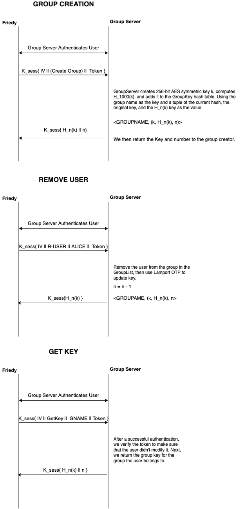

Friedrich Doku frd20@pitt.edu
Dominique Mittermeier dom41@pitt.edu
Isa Sulit-Peralejo ias28@pitt.edu
Threat Description: An adversary can try to capture in-flight packets (messages) between two parties, Alice and Bob, to disturb communications for nefarious purposes. An attacker could use a previous message from Alice or Bob to feign their identity as the other (message replay). Since the other party thinks they're talking to the correct entity, the adversary would be able to interact with resources and services prohibited for their use. Another use of the intercepted message is to tamper with a message in transit (message modification). This matters since an attacker could execute legal commands with dire consequences (e.g. upload malicious files, delete users/files, add users to groups, etc.) The last use of the captured message in this threat model considers how an attacker could intercept multiple messages and change the order by which they are sent (message reordering).
Policy: In-flight messages sent between client-server can be vulnerable to man-in-middle attacks where an adversary can position themselves in between the two endpoints. With the use of ephemeral session keys, a preliminary authentication challenge, message encryption, message sequence tracking, and rekeying, the system should be impervious to message reorder and replay. To combat modification, each envelope will contain an array of checksums for each object sent with the envelope.
Mechanism:
Sequenced session keys to combat Message Replay and Message Reordering When a client-server connection begins, the two entities create ephemeral sessions keys derived from an Elliptic Curve Diffie-Hellman (ECDH) handshake where their session key is the HMAC-SHA256 of the secret key, derived from the recipient private key and the sender public key. The symmetric session key (along with a shared random IV) is used for AES-256 CBC mode encryption and decryption. After the handshake, the server and client will undergo a challenge via signed ECDH and RSA. These implementations deployed in phase 3 assured integrity and authenticity which provided forward secrecy and protection against replay attacks. Considering an active attacker, a counter will be used to track the number of messages passed between the client-server. The counter will be tracked individually on each end. On each encryption and decryption, a new session key is derived. The process of deriving the new session key is to first create a new Elliptic Curve key from the previous session key prepended by the sequence number. Second, the key will be transformed via HMAC. Next, the key will be hashed up to the sequence number plus one iterations where the previous key to hash is the hash from the previous sequence. Finally, the last key will be undergo HMAC once again for the new symmetric session key.
Checksums to combat message modification
Each envelope will include an array of objChecksums that should be the size of the objContents. Within the decryption method, the envelope is first decrypted via AES-256 CBC Mode with the session key and the shared iv. Only a valid session key and the shared id will be able to decrypt the envelope correctly. Otherwise, the envelope will be null. If not null, the recipient will calculate the SHA-256 checksum of each object within the envelope. If the calculated SHA-256 checksum for the ith object fails to match the ith attached checksum, modification is recognized and the resultant decrypted Envelope is received as null. Whenever null is outputted from the Decrypt method, the recipient recognizes an error occurred, whether intentional or accidental, and the connection is aborted.
.Threat Description: The problem with this threat is that the file server may leak files to a third party. This third party might be able to view files without the proper authority, which is not desirable. We don’t want unauthorized entities to be viewing file contents of a group that they don’t belong to. This issue is a matter of authority and confidentiality.
Policy: When a user joins a group, they need to be able to view files that were created before they were added to the group. In other words, each new user should be given read access. When a user leaves the group, they should not be able to view new files or modified files. They already have read the previous files that they had access to, but this shouldn’t be a problem. We just need to prevent removed users from accessing modified or new files.
Mechanism: To solve this issue, we will encrypt files using 256-AES keys. Each group will have their own symmetric key. Every member in the group will have the same key. People who are not a part of the group will not be given the key. Users will encrypt files with the shared key before they upload them, therefore, the file server does not need to know these symmetric keys, nor will they need to know which key corresponds to which group. If a member of the group is removed, we will create a new key. If a new member is added that new member will receive the group key.
The GroupServer will be responsible for managing the keys and sending them to users. The GroupServer is trusted. Because of our work in Phase 3, the GroupServer is already capable of authenticating users, meaning group keys will go to the appropriate users.
To update the keys, we will use Lamport OTP. This way we don’t need to worry about re-encrypting all the files. When the GroupServer creates a key for the group it will create a 256-bit AES key. This key will then be hashed 1000 times. The GroupServer will store the key before it was hashed, the hashed key, and the current hash we are on. When a user is removed the GroupServer will decrement the hash number and update the key. The current hash number will be stored as the first 32 bits of the file. That way users can recompute the key.
Threat Description: This threat is when a file server steals a token assigned to a client and gives it to another user. This allows the user to use the stolen token on a different file server to gain access to a group’s files. The user can also use the token to access the group server and make group changes.
Policy: To prevent this threat from being exploited we will make the client token only usable on the assigned serve and current session. When the group server assigns a token it will identify the appropriate file server it is meant to be used on. This will be the only file server that will accept this token. During every session the client can only connect to one file server at a time and once the session is disconnected the token will be thrown away. New client tokens will be created during each session.
Mechanism: The token in the previous phase will be appended with the assigned file server’s IP and port address. It will be added to the beginning of the token. Since they have “.” characters in them we will institute a different character to separate the fields. The new character will be “/”. Once the token is presented to the file server it will compare the IP and port address to its own and if it matches it will allow access.
Conclude with a paragraph or two discussing the interplay between your proposed mechanisms, and commenting on the design process that your group followed. Did you discuss other ideas that didn’t pan out before settling on the above-documented approach? Did you end up designing a really interesting protocol suite that addresses multiple threats at once? Use this space to show off your hard work!
Finally, spend about one paragraph arguing that your modified protocols still address the threats T1–T4 described in Phase 3 of the project.
If your group did any extra credit, please discuss that in this section, as well.
Remove these instructions from your final submission.